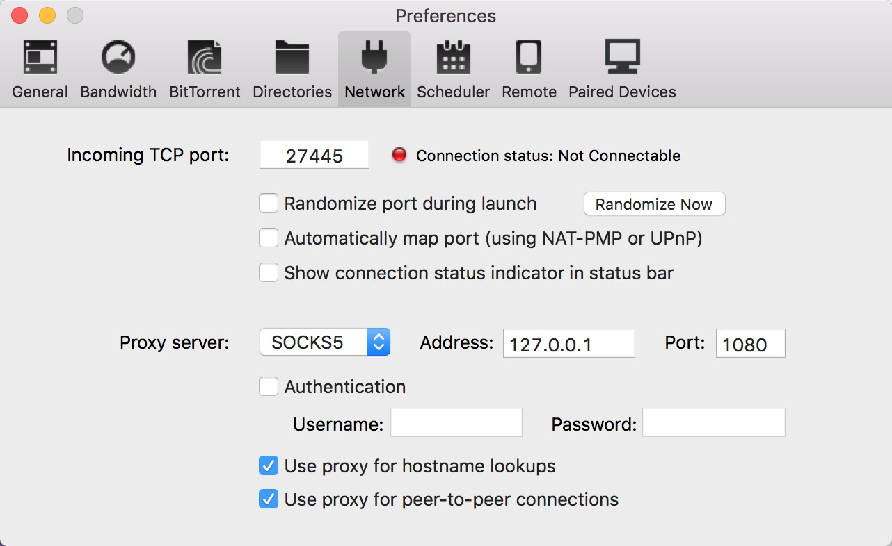

Shadowsocks服务端安装和配置
shadowsocks是一个十分方便安装和配置的代理工具。官网是：http://shadowsocks.org 这里记录一下，shadowsocks的安装和配置的过程，方便以后的查阅。这里使用的是python版本的shadowsocks。
首先安装shadowsocks，使用pip可以方便的安装：
pip install shadowsocks安装完成之后，这时候就会发现我们的系统里多了一些命令，主要需要用到的是 ssserver 这个工具。 使用 ssserver -h 可以查看其具体的用法。
ssserver -s 127.0.0.1 -p 8388 -k password -m aes-256-cfb --workers 10 -t 300 -q -d start上述命令就可以以后台程序的方式启动shadowsocks服务，其中监听的端口是8388，密码是password，加密方式是aes-256-cfb，其他的参数使用ssserver -h就能看到。
这里介绍另一种配置文件的方式，新建一个文件，比如叫config.json，内容为:
{
"server":"::",
"server_port":8388,
"local_address": "127.0.0.1",
"local_port":1080,
"password":"password",
"timeout":300,
"method":"aes-256-cfb",
"workers": 2,
"fast_open": false
}如果希望支持多个端口的话，可以参考一下的配置：
{
"server":"::",
"local_address": "127.0.0.1",
"local_port":1080,
"port_password": {
"10000": "password0",
"10001": "password1",
"10002": "password2"
},
"timeout":300,
"method":"aes-256-cfb",
"workers": 2,
"fast_open": false
}这里需要注意的是，"server"字段填写的是"::"，这样可以同时监听ipv4和ipv6的地址，如果你的服务器同时支持ipv4和ipv6的话，那么你就可以通过代理顺便完成ipv4和ipv6的相互转换了。其他的参数可以按照自己的喜好去填写，加密方式也可以改成其他的更有效的方式。 启动方式现在变成了：
ssserver -c /path/to/config.json -d startShadowsocks客户端
客户端下载： http://shadowsocks.org/en/download/clients.html
上述网址安卓版需要用Google Play下载，国内可以使用github的release程序：
https://github.com/shadowsocks/shadowsocks-android/releases
BBR安装
据说安装可以对服务器进行网络加速，我也试了一下，可能服务器本来就很快吧，没什么特别的感觉。
可以参考教程：https://q.aka.moe/2017/01/28/google-bbr/
这里简单复制一下我使用的操作： 使用root用户登录，运行以下命令：
wget --no-check-certificate https://github.com/teddysun/across/raw/master/bbr.sh
chmod +x bbr.sh
./bbr.sh安装完成后，脚本会提示需要重启VPS，输入y并回车后重启。重启完成后，进入 VPS，验证一下是否成功安装最新内核并开启 TCP BBR，输入以下命令：
uname -r查看内核版本，含有 4.9 就表示 OK 了。
sysctl net.ipv4.tcp_available_congestion_control返回值一般为： net.ipv4.tcp_available_congestion_control = bbr cubic reno
sysctl net.ipv4.tcp\_congestion\_control返回值一般为： net.ipv4.tcp_congestion_control = bbr
sysctl net.core.default_qdisc返回值一般为： net.core.default_qdisc = fq
lsmod | grep bbr返回值有tcp_bbr模块即说明bbr已启动。
开机启动
这里使用的是CentOS7，修改rc.local文件实现。原理这里不解释，我也是查的，不适用于其他的操作系统。
首先赋予rc.local可执行权限：
chmod +x /etc/rc.local然后修改/etc/rc.local文件，在下面增加我们需要执行的内容，我这里就比较简单的添加了启动ss服务的脚本：
/usr/bin/ssserver -c /path/to/shadowsocks/config.json -d start建议全部写上绝对路径，免得系统找不到我们的程序和配置文件。
utorrent配置代理
现在以utorrent为例，需要在“网络”中设置代理。shadowsocks默认的socks5代理地址是127.0.0.1:1080。最终的配置如下图：
